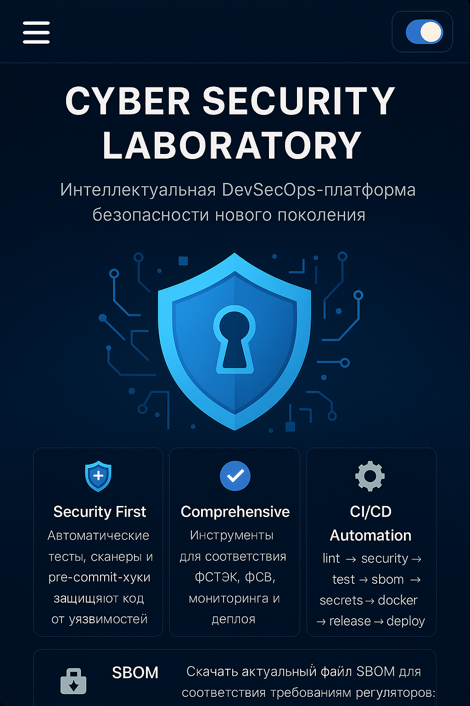

Интеллектуальная DevSecOps-платформа безопасности нового поколения
Cyber_Security_Laboratory — это интегрированная система оценки и обеспечения безопасности ПО. Она охватывает охрану объектов, защиту серверов, мониторинг Darknet, CI/CD, соответствие требованиям регуляторов и визуальный контроль. Построена на микросервисной архитектуре с автоматическим сканированием, Docker, SBOM и GitHub Environments.
Bandit, Safety, Gitleaks, pre-commit, SBOM, compliance — всё автоматизировано.
ФСТЭК, ФСБ, ГОСТ, мониторинг, деплой, observability, vision — всё покрыто.
Пайплайн: lint → security → test → sbom → docker → release → deploy.
Автоматизация через GitHub Actions:
Файл: .github/workflows/devsecops.yml
Этапы: lint → security → test → sbom → secrets → docker → release → deploy
Команды: make all, make release, make deploy
Prometheus: /metrics endpoint
Grafana: дешборды из observability/grafana
ELK: централизованные логи
Docker Compose / Kubernetes (Helm/Kustomize)
Поддержка GitHub Environments: dev, stage, prod
Ручное подтверждение перед продакшеном
Разработчик: Олег Журавлёв
Email: skrusich2000@gmail